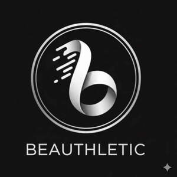

Trade Mark Journal No.2026/006 6 February 2026
UK00004319499 5 January 2026 (3,25,35)

- Class 3
- Cosmetic creams and lotions; Cosmetic facial lotions; Facial lotions [cosmetic]; Sunscreen creams [for cosmetic use]; Facial creams [cosmetic]; Facial creams [for cosmetic use]; Cosmetic creams for the skin; Skin creams [for cosmetic use]; Skin creams [cosmetic]; Facial creams [cosmetics]; Suncare lotions [for cosmetic use]; Moisturising skin lotions [cosmetic]; Body and facial creams [cosmetics]; Facial moisturisers [cosmetic]; Skin balms [cosmetic]; Cosmetic moisturisers; Creams (Cosmetic -); Cosmetic creams; Cosmetic hair lotions; Moisturising skin creams [cosmetic]; Cleansing creams [cosmetic]; Anti-aging creams [for cosmetic use]; Cosmetic nourishing creams; Skin care lotions [cosmetic]; Body creams [cosmetics]; Skin cleansers [cosmetic]; Skin care creams [cosmetic]; Cosmetic creams for skin care; Facial gels [cosmetics]; Anti-ageing creams [for cosmetic use]; Skin conditioning creams for cosmetic purposes; Cosmetic massage creams; Skin whitening preparations [cosmetic]; Hydrating creams for cosmetic use; Moisturising gels [cosmetic]; Facial cleansers [cosmetic]; Anti-wrinkle creams [for cosmetic use]; Body and facial gels [cosmetics]; Cosmetic products in the form of aerosols for skincare; Cosmetic sunscreen preparations; Hair care lotions [for cosmetic use]; Hair care creams [for cosmetic use]; Skin moisturizers used as cosmetics; Moisturising body lotion [cosmetic]; Skin cream [for cosmetic use]; Cosmetic creams for dry skin; Tissues impregnated with cosmetic lotions; Lotions (Tissues impregnated with cosmetic -); Anti-aging moisturizers used as cosmetics; Anti-ageing serums for cosmetic purposes; Cosmetics and cosmetic preparations; Cosmetics in the form of lotions; Lotions for cosmetic purposes; Cosmetic suntan lotions; Cosmetic sun milk lotions; Cosmetic products in the form of aerosols for skin care; Cosmetic skin fresheners; Skin hydrators for cosmetic purposes; Self-tanning preparations [cosmetic]; Sun creams [for cosmetic use]; Skin recovery creams [cosmetics]; Facial cream [for cosmetic use]; Skin toners [cosmetic]; Sunscreen [for cosmetic use]; Cosmetics in the form of creams; Cosmetic products for the shower; Toning creams [cosmetic]; Anti-aging serum for cosmetic use; Moisturisers [cosmetics]; Sun care lotions [for cosmetic use]; Retinol cream for cosmetic purposes; Skin masks [cosmetics]; Sunscreens [for cosmetic use]; Cosmetic preparations for skin firming; Facial toners [cosmetic]; Fluid creams [cosmetics]; Facial serum for cosmetic use; Acne cleansers, cosmetic; Self tanning lotions [cosmetic]; Face creams for cosmetic use; Serums for cosmetic purposes; Body gels [cosmetics]; Skin care oils [cosmetic]; Facial lotions; After-sun preparations for cosmetic use; Facial peel preparations for cosmetic use; Body cream for cosmetic use; Cosmetic facial packs; Facial packs [cosmetic]; Moisturising creams, lotions and gels; Cosmetic facial masks; Facial masks [cosmetic]; Cosmetic skin enhancers; Skin care (Cosmetic preparations for -); Cosmetic preparations for skin care; Cosmetic hand creams; Wrinkle-minimizing cosmetic preparations for topical facial use; Cold creams for cosmetic use; Cosmetic sun-protecting preparations; Kits (Cosmetic -); Cosmetic kits; Cosmetic masks; Self-tanning preparations [cosmetics]; Anti-wrinkle cream [for cosmetic use]; Skincare cosmetics; Scented body lotions and creams; Cosmetic foams containing sunscreens; Body oils [for cosmetic use]; Skin lotions; Lotions for the skin; Skin fresheners [cosmetics]; Non-medicated hair treatment preparations for cosmetic purposes; Creams (Skin whitening -); Skin whitening creams; Facial scrubs [cosmetic]; Non-medicated cosmetics and toiletry preparations; Topical skin sprays for cosmetic purposes; Cosmetic eye gels; Cosmetic tanning preparations; Bath oils for cosmetic purposes; Cosmetic preparations for body care; Perfume oils for the manufacture of cosmetic preparations; Night creams [cosmetics]; Cosmetic soaps; Gels for cosmetic use; Cosmetic suntan preparations; Facial washes [cosmetic]; Make-up removing lotions; Cosmetic hair care preparations; Skin relief serum [cosmetic]; Ointments for cosmetic use; Cosmetic oils for the epidermis; Facial creams; Exfoliating scrubs for cosmetic purposes.
- Class 25
- Sports wear; Athletic clothing; Athletic shoes; Athletic uniforms; Athletic footwear; Athletic tights; Tennis wear; Shoes for casual wear; Headgear for wear; Exercise wear; Padded shirts for athletic use; Clothing for leisure wear; Clothing for wear in wrestling games; Ski wear; Padded pants for athletic use; Ladies wear; Leisure wear; Clothing for wear in judo practices; Formal wear; Athletics shoes; Sashes for wear; Head wear; Maternity wear; Breeches for wear; Bridesmaids wear; Sports shoes; Clothes for sports; Moisture-wicking sports pants; Swim wear for children; Infant wear; Surf wear; Athletics footwear; Sports pants; Moisture-wicking sports shirts; Clothing for sports; Sports clothing; Children's wear; Dresses for evening wear; Sports garments; Swim wear for gentlemen and ladies; Sport shoes; Clothes for sport; Sports shirts; Face masks [fashion wear] ; Jackets being sports clothing; Sports clothing [other than golf gloves]; Evening wear; Athletics vests; Footwear not for sports; Footwear for sports; Sports footwear; Basketball shoes; Football shoes; Gymnastic shoes; Clothing for gymnastics; Sports jerseys and breeches for sports; Studs for football shoes; Sport shirts; Sports headgear [other than helmets]; Combative sports uniforms; Moisture-wicking sports bras; Rain wear; Dress shoes; Boots for sports; Footwear for sport; Men's dress socks; Footwear for use in sport; Formal evening wear; Sports socks; Cleats for attachment to sports shoes; Jogging bottoms [clothing]; Sports vests; Jogging outfits; Shoes for leisurewear; Shorts [clothing]; Jogging shoes; Sports over uniforms; Sports singlets; Sports bras; Sports jerseys; Sports jackets.
- Class 35
- Online marketing; Online advertising; Online advertisements; Advertising the goods and services of online vendors via a searchable online guide; Online retail services for downloadable digital music; Online advertising on a computer network; Online advertising on computer networks; Online retail services for downloadable virtual clothing; Providing a searchable online advertising guide featuring the goods and services of other on-line vendors on the internet; Online advertising services; On-line advertising; Online ordering services; Online retail services in relation to downloadable virtual handbags; Providing a searchable online advertising guide featuring the goods and services of online vendors; On-line advertising on a computer network; Online retail services in relation to downloadable virtual footwear; Online retail services for downloadable and pre-recorded music and movies; On-line auctioneering; Providing searchable online advertising guides; Online retail services in relation to downloadable virtual clothing; Online retail services in relation to downloadable virtual headwear; Dissemination of advertising for others via an on-line communications network on the internet; Online retail services in relation to downloadable virtual works of art; Advertising, including on-line advertising on a computer network; Arranging commercial transactions, for others, via online shops; Provision of an online marketplace for buyers and sellers of downloadable digital image files authenticated by non-fungible tokens [NFTs]; Online retail services relating to cosmetics; Arranging subscriptions of the online publications of others; On-line advertising on computer communication networks; Online retail services relating to clothing; Online retail services relating to toys; Computerized on-line ordering services.
Jb isasi mpyadora